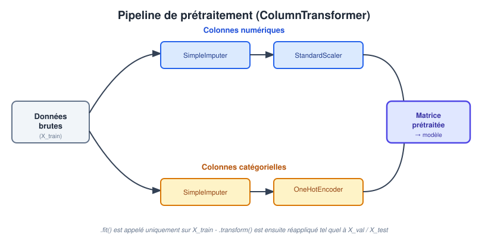

Ce chapitre appartient à un module qui réunit deux éléments de formation distincts : le cours « Analyse de Données et Data Visualisation » et le cours « Machine Learning ». Dans les deux cas, avant de pouvoir explorer, visualiser ou modéliser un jeu de données, il faut d’abord savoir où le trouver, comment diagnostiquer et corriger ses défauts, puis comment le transformer pour la suite du travail. Ce socle de compétences est commun aux deux cours et n’est donc écrit qu’une seule fois, dans ce chapitre partagé.
Certaines notions, cependant, ne sont utiles que dans l’un des deux cours : la construction d’un pipeline scikit-learn destiné à alimenter un algorithme n’a de sens qu’en Machine Learning ; l’extraction de composantes temporelles pour enrichir un tableau de bord relève davantage de l’analyse de données. Pour s’y retrouver :
- une section sans mention particulière est commune aux deux cours : tous les étudiants doivent la maîtriser ;
- une section suivie de (ML) est spécifique au cours de Machine Learning ;
- une section suivie de (DA) est spécifique au cours d’Analyse de Données et Data Visualisation.
Un étudiant du cours d’Analyse de Données peut parcourir les sections (ML) à titre culturel, pour comprendre comment les mêmes données seraient ensuite utilisées par un modèle ; symétriquement, un étudiant de Machine Learning gagne à comprendre les sections (DA), qui montrent comment les mêmes données brutes serviraient à construire un tableau de bord. Mais seules les sections sans mention et celles correspondant à son propre cours sont exigibles à l’évaluation.
À la fin de ce chapitre, l’étudiant sera capable de :
- Identifier les principales sources de collecte de données (bases de données, fichiers plats, API, web scraping, données ouvertes) et les principaux formats dans lesquels elles se présentent ;
- Diagnostiquer la représentativité d’un échantillon et les problèmes de qualité d’un jeu de données (valeurs manquantes, aberrantes, dupliquées, incohérentes) ;
- Appliquer, avec
pandas, des stratégies adaptées de traitement des valeurs manquantes et aberrantes ; - Transformer des variables catégorielles (encodage) et numériques (mise à l’échelle), en justifiant la méthode choisie ;
- (DA) Discrétiser une variable numérique et en dériver de nouvelles variables utiles à l’exploration et à la visualisation ;
- (ML) Construire, avec
scikit-learn, un pipeline de prétraitement complet (ColumnTransformer+Pipeline) exempt de fuite de données.
Si les données sont de mauvaise qualité, corrompues ou biaisées, ni les conclusions d’une analyse aussi soignée soit-elle, ni les prédictions d’un modèle aussi sophistiqué soit-il, ne pourront être fiables (Garbage In, Garbage Out).
— Principe fondamental de la Data Science
Ce chapitre couvre l’ensemble du travail qui précède l’analyse ou la modélisation à proprement parler : où trouver les données, comment s’assurer qu’elles sont représentatives, comment détecter et corriger leurs défauts, puis comment les transformer - qu’il s’agisse de les préparer pour l’exploration et la visualisation (cours d’Analyse de Données), ou pour les transmettre à un algorithme d’apprentissage (cours de Machine Learning). Dans les deux cours, ces étapes correspondent aux mêmes phases du cycle de vie d’un projet fondé sur la donnée, telles que présentées dans le chapitre d’introduction propre à chacun de vos deux cours.
Tout au long de ce chapitre, une observation est une ligne d’un tableau et une variable est une colonne. En cours de Machine Learning, on distingue plus précisément les variables explicatives, regroupées dans une matrice notée \(X\), de la variable à prédire, notée \(y\) - une notation que vous retrouverez dans toute la suite de ce cours. En Analyse de Données, cette distinction \(X\)/\(y\) n’est pas toujours nécessaire : on manipule plus simplement un unique tableau pandas (un DataFrame), dont certaines colonnes serviront à l’exploration et d’autres à la visualisation.
Avant toute modification, conservez une copie du fichier original et rédigez un petit dictionnaire de données. Pour chaque colonne, notez son nom, sa signification, son unité, son type attendu et les valeurs possibles. Par exemple, prix peut être un nombre positif en MAD, tandis que type_bien peut prendre les valeurs « appartement », « maison » ou « terrain ». Ce dictionnaire évite de corriger à tort une valeur qui était en réalité parfaitement valide, et il documente le sens exact de chaque colonne pour quiconque reprendra votre travail par la suite.
1. Où trouver les données ? Les stratégies de collecte
Avant tout projet, il faut identifier la ou les sources permettant de constituer le jeu de données à traiter. Plusieurs grandes familles de sources coexistent dans la pratique professionnelle, qu’il s’agisse d’alimenter un tableau de bord ou d’entraîner un modèle.
1.1. Les bases de données
La source la plus courante en entreprise reste la base de données interne, qu’elle soit :
- relationnelle (SQL) : les données sont organisées en tables reliées par des clés (ex. PostgreSQL, MySQL, SQL Server) et interrogées via le langage SQL (Structured Query Language) ;
- non-relationnelle (NoSQL) : les données sont stockées sous une forme plus flexible - documents JSON (MongoDB), paires clé-valeur (Redis), ou graphes (Neo4j) - adaptée aux données peu structurées ou à très grande échelle.
pandas permet de charger directement le résultat d’une requête SQL dans un DataFrame :
import pandas as pd
import sqlite3
connexion = sqlite3.connect("ventes.db")
df = pd.read_sql("SELECT * FROM transactions WHERE annee = 2025", connexion)1.2. Les fichiers plats et les principaux formats de données
En dehors des bases de données, les données sont fréquemment échangées sous forme de fichiers. Savoir reconnaître un format et choisir le bon outil de lecture est un prérequis à toute étape suivante :
| Format | Caractéristiques | Lecture avec pandas |
|---|---|---|
| CSV | Texte tabulaire, très répandu, lisible par un humain | pd.read_csv() |
| JSON | Structure hiérarchique (objets imbriqués), courant pour les API | pd.read_json() |
Excel (.xlsx) |
Tableur, souvent utilisé en entreprise | pd.read_excel() |
| Parquet | Format binaire columnaire, compressé, optimisé pour l’analytique | pd.read_parquet() |
Contrairement au CSV, le format Parquet stocke les données par colonne plutôt que par ligne. Cela permet de ne lire que les colonnes réellement nécessaires à une analyse, de bénéficier d’une compression efficace et de conserver les types de données (un entier reste un entier, pas une chaîne de caractères à réinterpréter). Il est aujourd’hui privilégié pour les jeux de données volumineux, et s’utilise nativement avec pandas, Polars ou DuckDB.
1.3. Les API
Une API (Application Programming Interface) est une interface mise à disposition par un fournisseur de données, qui permet d’obtenir des données structurées de façon normalisée - sans avoir à analyser du HTML. On distingue notamment :
- les API REST, les plus répandues, où chaque ressource est accessible via une URL et une méthode HTTP (
GET,POST…), avec une réponse généralement au format JSON ; - les API GraphQL, plus récentes, qui permettent au client de préciser exactement les champs qu’il souhaite récupérer en une seule requête, réduisant ainsi le volume de données transférées inutilement.
import requests
import pandas as pd
reponse = requests.get("https://api.exemple.org/ventes?annee=2025")
reponse.raise_for_status()
df = pd.json_normalize(reponse.json()["resultats"])pd.json_normalize est particulièrement utile lorsque la réponse JSON contient des objets imbriqués : elle « aplatit » automatiquement cette structure hiérarchique en un tableau exploitable.
1.4. Le web scraping
Lorsque les données ne sont disponibles que sur des pages web, sans base de données ni API accessibles, on a recours au web scraping : l’extraction automatisée d’informations à partir du code HTML de sites web. Les bibliothèques Python de référence sont :
BeautifulSoup: idéale pour analyser (parser) le HTML d’une page unique et en extraire des éléments ciblés (balises, attributs) ;Scrapy: un framework complet, conçu pour des collectes à grande échelle sur de nombreuses pages, avec gestion native de la pagination, des files d’attente de requêtes et de l’exportation des résultats.
Le web scraping n’est pas toujours autorisé. Avant de collecter des données sur un site, il convient de vérifier :
- le fichier
robots.txtdu site, qui précise les zones autorisées ou interdites aux robots ; - les conditions générales d’utilisation (CGU) du site, qui peuvent explicitement interdire la collecte automatisée ;
- le cadre réglementaire applicable à la protection des données personnelles (ex. loi marocaine 09-08, ou RGPD pour les données concernant des ressortissants européens), en particulier si des données à caractère personnel sont collectées.
1.5. Données ouvertes et capteurs connectés
Deux autres sources méritent d’être mentionnées :
- les portails d’open data (données publiques mises à disposition par des institutions : données démographiques, économiques ou climatiques) ;
- les capteurs et objets connectés (IoT), qui génèrent des flux de données en continu (température, géolocalisation, fréquentation), souvent collectés via des files de messages (ex. MQTT, Kafka) avant d’être stockés pour l’analyse ou la modélisation.
| Source | Exemple d’outil ou de technologie |
|---|---|
| Bases de données | SQL (PostgreSQL, MySQL), NoSQL (MongoDB) |
| Fichiers plats | CSV, JSON, Excel, Parquet |
| API | REST, GraphQL |
| Web Scraping | BeautifulSoup, Scrapy |
| Données ouvertes / IoT | Portails open data, MQTT, Kafka |
2. Représentativité et biais d’échantillonnage
Collecter des données ne suffit pas : encore faut-il qu’elles soient représentatives de la population sur laquelle les conclusions de l’analyse - ou les prédictions du modèle - seront ensuite utilisées. Un échantillon est représentatif lorsque sa distribution reflète fidèlement celle de la population cible.
Un échantillon non représentatif introduit un biais qui se propage à toutes les étapes suivantes, aussi rigoureuses soient-elles. Aucune technique d’analyse ou de modélisation, aussi avancée soit-elle, ne peut corriger un biais présent dès la collecte des données.
On distingue notamment trois types de biais fréquents en pratique :
- Biais de sélection : l’échantillon collecté ne couvre pas correctement certains sous-groupes de la population (ex. un sondage de satisfaction réalisé uniquement auprès des clients ayant un compte en ligne exclut de fait les clients moins digitalisés).
- Biais de couverture temporelle : les données ne couvrent qu’une période particulière, non représentative du comportement général (ex. collecter des données de vente uniquement pendant une période de soldes).
- Biais de mesure : l’instrument ou le protocole de collecte lui-même déforme la donnée (ex. un capteur mal calibré, un formulaire dont la formulation oriente la réponse).
Lors de l’élection présidentielle américaine de 1936, le magazine Literary Digest prédit, sur la base de plus de 2 millions de réponses à un sondage, la victoire du candidat Alf Landon. Le sondage fut envoyé par la poste à partir de listes d’abonnés au téléphone et de propriétaires de voitures - une population nettement plus aisée que la moyenne en pleine Grande Dépression. Malgré une taille d’échantillon considérable, le sondage souffrait d’un biais de sélection majeur, et la prédiction se révéla fausse : Franklin D. Roosevelt fut réélu avec une large majorité. Cet exemple illustre qu’un grand échantillon non représentatif reste moins fiable qu’un échantillon plus petit mais correctement constitué - un principe qui vaut aussi bien pour une étude statistique classique que pour l’entraînement d’un modèle de Machine Learning.
3. Nettoyage des données
Une fois collectées, les données contiennent presque toujours des imperfections : valeurs manquantes, doublons, incohérences et valeurs aberrantes sont la norme plutôt que l’exception. Le nettoyage est souvent l’une des étapes les plus chronophages d’un projet. Il consiste notamment à vérifier cinq dimensions de qualité :
- complétude : les informations importantes sont-elles présentes ?
- validité : les valeurs respectent-elles les règles attendues (un prix positif, une date valide) ?
- unicité : une même observation n’est-elle pas enregistrée deux fois ?
- cohérence : les colonnes et les unités sont-elles compatibles entre elles ?
- actualité : les dates couvrent-elles la période utile à la question posée ?
Il faut garder une trace de chaque correction apportée : colonne concernée, règle appliquée, nombre de lignes modifiées et justification. Cette documentation permet de revenir en arrière si nécessaire, et d’expliquer honnêtement les résultats obtenus en aval - qu’il s’agisse d’un graphique ou d’une prédiction.
3.1. Les valeurs manquantes
Une valeur manquante peut avoir des origines très différentes, ce qui conditionne directement la stratégie à adopter pour la traiter :
| Type | Signification | Exemple |
|---|---|---|
| MCAR (Missing Completely At Random) | L’absence ne dépend d’aucune variable, ni observée ni cachée | Un capteur ou un bug technique tombe en panne aléatoirement |
| MAR (Missing At Random) | L’absence dépend d’une autre variable observée | Les hommes répondent moins souvent à une question sur le revenu, indépendamment du revenu lui-même |
| MNAR (Missing Not At Random) | L’absence dépend de la valeur manquante elle-même | Les personnes aux revenus les plus élevés refusent plus souvent de déclarer leur revenu |
Le cas MNAR est le plus problématique : ignorer ou imputer naïvement ces valeurs manquantes peut introduire un biais systématique difficile à corriger, précisément parce que l’absence de la donnée est elle-même porteuse d’information. Ces trois étiquettes servent surtout à réfléchir à la cause probable d’une absence - il n’est pas nécessaire de réaliser un test statistique formel pour les distinguer dans ce cours, mais il faut absolument éviter d’imputer automatiquement une valeur manquante sans s’être interrogé sur ce qu’elle signifie.
Avec pandas, on détecte et on traite les valeurs manquantes ainsi :
# Détection
df.isna().sum() # nombre de valeurs manquantes par colonne
df.isna().mean().round(2) * 100 # pourcentage de valeurs manquantes
# Suppression
df.dropna(subset=["prix"]) # supprime les lignes sans prix
# Imputation simple
df["surface"] = df["surface"].fillna(df["surface"].median())
df["quartier"] = df["quartier"].fillna("Non renseigné")Stratégies de traitement des valeurs manquantes :
| Stratégie | Principe | Limite |
|---|---|---|
| Suppression des lignes | Retirer toute observation comportant une valeur manquante | Perte d’information ; biaise l’échantillon si l’absence n’est pas MCAR |
| Imputation simple | Remplacer par la moyenne, la médiane (numérique) ou le mode (catégoriel) | Réduit artificiellement la variance de la variable |
| Valeur explicite | Remplacer par une catégorie dédiée, ex. « Non renseigné » | Adaptée aux variables catégorielles avec une proportion élevée de valeurs manquantes |
- Si la proportion de valeurs manquantes est faible (quelques pourcents) et que le mécanisme semble MCAR, la suppression des lignes concernées est souvent acceptable.
- Si la proportion est élevée, ou si l’absence porte sur une variable centrale de l’analyse, on préfère une imputation, en gardant à l’esprit qu’elle introduit un biais qu’il faut documenter.
En Machine Learning, dès lors que les données seront séparées en jeux d’entraînement et de test (notion détaillée dans le chapitre suivant de votre cours), la stratégie d’imputation (moyenne, médiane…) doit être calculée uniquement sur le jeu d’entraînement, puis appliquée telle quelle aux jeux de validation et de test. Calculer cette statistique sur l’ensemble des données avant de les séparer constitue une fuite de données (data leakage) : le modèle bénéficierait indirectement d’une information provenant du jeu de test, ce qui fausserait l’évaluation finale de sa performance. Cette contrainte, propre à un contexte de modélisation prédictive, n’a pas d’équivalent en analyse de données exploratoire, où l’on travaille généralement sur l’ensemble du jeu de données disponible.
3.2. Les valeurs aberrantes (outliers)
Une valeur aberrante est une observation qui s’écarte fortement du comportement général des données - parfois une erreur de saisie, parfois un phénomène réel mais rare. Deux méthodes de détection sont couramment enseignées :
- La méthode de l’écart interquartile (IQR), robuste aux distributions asymétriques : on considère comme aberrante toute valeur en dehors de l’intervalle \[ \left[\, Q_1 - 1{,}5 \times IQR,\ \ Q_3 + 1{,}5 \times IQR \,\right], \qquad \text{avec } IQR = Q_3 - Q_1 . \]
- Le score-z, qui suppose implicitement une distribution proche de la loi normale : toute valeur dont le score \[ z = \frac{x - \mu}{\sigma} \] dépasse un seuil en valeur absolue (souvent \(|z| > 3\)) est considérée comme aberrante.
q1, q3 = df["prix"].quantile([0.25, 0.75])
iqr = q3 - q1
borne_basse, borne_haute = q1 - 1.5 * iqr, q3 + 1.5 * iqr
aberrants = df[(df["prix"] < borne_basse) | (df["prix"] > borne_haute)]Avant de supprimer systématiquement les valeurs aberrantes détectées, il faut se demander si elles reflètent une erreur de mesure (à corriger ou supprimer) ou un phénomène réel mais rare (par exemple, un très gros client dans une base de transactions commerciales) - auquel cas leur suppression ferait perdre une information potentiellement précieuse, aussi bien pour une analyse exploratoire que pour un modèle.
La boîte à moustaches (boxplot), présentée en détail dans le chapitre de votre cours consacré à la visualisation des données, reste l’outil graphique privilégié pour repérer d’un coup d’œil les valeurs aberrantes d’une variable numérique, sans avoir à calculer explicitement les bornes de l’IQR.
3.3. Les doublons et les incohérences
Un doublon (deux lignes strictement identiques, ou identiques sur les variables clés) doit généralement être supprimé, car il donne artificiellement plus de poids à une observation - un risque parfois qualifié de « double comptage », qu’il s’agisse de fausser une moyenne calculée pour un tableau de bord ou de biaiser les paramètres appris par un algorithme.
df.duplicated().sum() # nombre de lignes strictement dupliquées
df = df.drop_duplicates()
df["ville"] = df["ville"].str.strip().str.title() # espaces superflus, casse
df["date"] = pd.to_datetime(df["date"], errors="coerce") # type de données cohérentLes incohérences les plus fréquentes concernent la casse et les espaces superflus dans les chaînes de caractères (« casablanca » vs « Casablanca »), les types de données mal interprétés (une date lue comme du texte), et les unités hétérogènes (des prix exprimés tantôt en MAD, tantôt en euros ; des distances tantôt en mètres, tantôt en kilomètres).
3.4. Vers une démarche de qualité systématique
Sur des projets récurrents - un tableau de bord alimenté quotidiennement, ou un modèle réentraîné chaque semaine sur de nouvelles données - il devient risqué de vérifier la qualité des données « à l’œil » à chaque exécution. Des bibliothèques comme Great Expectations permettent de définir des règles de validation explicites (« la colonne prix doit toujours être positive », « la colonne date ne doit jamais être manquante ») et de les exécuter automatiquement à chaque nouvelle collecte, afin de détecter une dérive de qualité avant qu’elle n’affecte l’analyse en aval ou, en Machine Learning, avant qu’elle ne dégrade silencieusement la performance d’un modèle en production.
4. Encodage des variables catégorielles
De nombreux outils, qu’ils soient statistiques, graphiques ou algorithmiques, manipulent plus facilement des valeurs numériques que du texte. C’est particulièrement vrai en Machine Learning, où la quasi-totalité des algorithmes reposent sur des opérations mathématiques - distances, produits scalaires, sommes pondérées - qui ne peuvent s’appliquer qu’à des nombres. L’encodage désigne l’ensemble des techniques permettant de transformer une variable catégorielle en une représentation numérique exploitable, sans dénaturer l’information qu’elle porte.
On distingue deux grandes stratégies, quelle que soit la bibliothèque utilisée pour les mettre en œuvre :
- l’encodage ordinal, adapté aux catégories qui possèdent un ordre naturel (ex.
Faible<Moyen<Élevé) : chaque catégorie est simplement remplacée par un entier reflétant cet ordre ; - l’encodage One-Hot (variables indicatrices), adapté aux catégories sans ordre (ex. les quartiers d’une ville) : chaque catégorie devient une nouvelle colonne binaire (0 ou 1).
Appliquer un encodage ordinal à une variable nominale (sans ordre naturel, ex. quartier : Centre, Nord, Sud) introduit un ordre artificiel que l’outil en aval interprétera à tort comme porteur de sens - un algorithme pourrait, par exemple, en déduire que Sud (codé 2) est « plus grand » que Centre (codé 0), ce qui n’a aucune signification réelle.
4.1. Encodage rapide avec pandas (DA)
Pour faciliter certains graphiques ou calculs de corrélation, un encodage simple, réalisé directement avec pandas, est généralement suffisant en Analyse de Données :
# Encodage ordinal
ordre = {"Faible": 0, "Moyen": 1, "Élevé": 2}
df["niveau_encode"] = df["niveau"].map(ordre)
# Encodage One-Hot
df_encode = pd.get_dummies(df, columns=["quartier"])Cet encodage simple suffit pour préparer un graphique ou une matrice de corrélation. Un encodage plus robuste, fondé sur scikit-learn et pensé pour alimenter un algorithme d’apprentissage - avec gestion des catégories rares, des catégories inconnues au moment du déploiement, et intégration dans un pipeline reproductible - est approfondi dans 4.2. Encodage robuste avec scikit-learn (ML).
4.2. Encodage robuste avec scikit-learn (ML)
En Machine Learning, l’encodage doit être réutilisable à l’identique sur de nouvelles données (le jeu de test, puis les données rencontrées en production) : on ne se contente donc pas d’une transformation ponctuelle d’un DataFrame, mais d’un objet ajusté (fit) puis appliqué (transform), exactement comme les autres outils de prétraitement de ce chapitre.
Encodage ordinal, avec OrdinalEncoder : dans Scikit-Learn, on réserve OrdinalEncoder aux variables explicatives ordinales (dans \(X\)) ; LabelEncoder, plus rarement utile ici, est en réalité conçu pour encoder la variable cible \(y\) en classification, et non les colonnes de \(X\) - une confusion fréquente à éviter.
from sklearn.preprocessing import OrdinalEncoder
encodeur_ordinal = OrdinalEncoder(categories=[["Faible", "Moyen", "Élevé"]])
X["niveau_encode"] = encodeur_ordinal.fit_transform(X[["niveau"]])Encodage One-Hot, avec OneHotEncoder : chaque catégorie devient une colonne binaire indépendante.
Par exemple, la variable quartier (Centre, Nord, Sud) devient :
quartier
| quartier_Centre | quartier_Nord | quartier_Sud |
|---|---|---|
| 1 | 0 | 0 |
| 0 | 1 | 0 |
| 0 | 0 | 1 |
from sklearn.preprocessing import OneHotEncoder
encodeur_onehot = OneHotEncoder(drop="first", handle_unknown="ignore")
quartier_encode = encodeur_onehot.fit_transform(X[["quartier"]])Lorsqu’une variable comporte \(k\) catégories, il suffit en réalité de \(k-1\) colonnes binaires pour représenter toute l’information : la dernière catégorie est déductible des autres (si quartier_Centre = 0 et quartier_Nord = 0, alors nécessairement quartier_Sud = 1). Conserver les \(k\) colonnes introduit une redondance parfaite entre variables (colinéarité), problématique pour certains algorithmes comme la régression linéaire. L’argument drop='first' de OneHotEncoder supprime automatiquement cette colonne redondante - une précaution utile pour un modèle linéaire avec constante (intercept), mais pas une règle universelle : pour un modèle fondé sur des arbres de décision, par exemple, supprimer une catégorie n’est généralement pas nécessaire, et conserver toutes les colonnes peut même faciliter l’interprétation. Le choix de la catégorie de référence supprimée doit donc rester conscient, et non automatique par réflexe.
handle_unknown="ignore" mérite une attention particulière : il indique à l’encodeur comment se comporter s’il rencontre, lors du déploiement, une catégorie jamais vue pendant l’entraînement (par exemple, un nouveau quartier apparu après la mise en production du modèle) - plutôt que de provoquer une erreur, il encode alors cette observation comme un vecteur de zéros.
4.3. Comparatif des méthodes d’encodage
| Méthode | Adaptée à | Nombre de colonnes créées | Outil pandas |
Outil scikit-learn (ML) |
|---|---|---|---|---|
| Encodage ordinal | Variables ordinales | 1 (inchangé) | .map() |
OrdinalEncoder |
| Encodage One-Hot | Variables nominales, peu de catégories | \(k\) (ou \(k-1\)) | pd.get_dummies() |
OneHotEncoder |
Lorsqu’une variable catégorielle comporte des centaines, voire des milliers de catégories (ex. un identifiant de ville, un code produit), l’encodage One-Hot devient impraticable (explosion du nombre de colonnes). Des techniques plus avancées, comme le Target Encoding (remplacer chaque catégorie par la moyenne de la cible \(y\) associée) ou le Frequency Encoding (remplacer chaque catégorie par sa fréquence d’apparition), permettent de contourner ce problème - au prix d’une vigilance accrue vis-à-vis de la fuite de données, le Target Encoding utilisant directement la cible \(y\) pour construire l’encodage. Ces techniques dépassent le cadre de ce chapitre et seront abordées dans un cours de Machine Learning plus avancé.
5. Mise à l’échelle : standardisation et normalisation
Lorsque plusieurs variables numériques ont des échelles très différentes (ex. une surface en \(m^2\) et un prix en millions de MAD), il est souvent utile de les ramener à une échelle comparable - que ce soit pour faciliter certaines visualisations combinées, ou parce qu’un algorithme y est directement sensible.
5.1. Les deux transformations de référence
La standardisation (Z-score scaling) centre chaque variable autour d’une moyenne de 0, avec un écart-type de 1 :
\[ x' = \frac{x - \mu}{\sigma} \tag{1}\]
où \(\mu\) est la moyenne et \(\sigma\) l’écart-type de la variable.
La normalisation (Min-Max scaling) ramène chaque variable dans un intervalle fixe, généralement \([0, 1]\) :
\[ x' = \frac{x - x_{min}}{x_{max} - x_{min}} \tag{2}\]
df["prix_standard"] = (df["prix"] - df["prix"].mean()) / df["prix"].std()
df["prix_norm"] = (df["prix"] - df["prix"].min()) / (df["prix"].max() - df["prix"].min())Une valeur normalisée de 0,5 ne signifie pas que l’observation correspond à la moyenne de la variable : elle signifie que l’observation se situe exactement à mi-chemin entre le minimum et le maximum observés. Ne confondez pas position relative dans l’intervalle et position relative à la moyenne.
5.2. Quand utiliser l’une ou l’autre ?
| Critère | Standardisation (Équation 1) | Normalisation (Équation 2) |
|---|---|---|
| Sensibilité aux valeurs aberrantes | Modérée | Élevée (les valeurs extrêmes déterminent \(x_{min}\)/\(x_{max}\)) |
| Hypothèse sur la distribution | Aucune (mais adaptée aux distributions proches de la normale) | Aucune |
| Intervalle de sortie | Non borné (généralement \([-3, 3]\) environ) | Borné, \([0, 1]\) |
| Cas d’usage typique | Algorithmes basés sur le gradient, PCA, régression, comparaisons statistiques | Réseaux de neurones (fonctions d’activation bornées), traitement d’image (pixels) |
Si une variable comporte quelques valeurs extrêmes mais légitimes (ex. revenu_annuel, avec l’essentiel des observations entre 30 000 et 200 000 MAD, mais quelques grandes fortunes dépassant 5 000 000 MAD), une normalisation min-max écrasera la quasi-totalité des observations « normales » dans un intervalle minuscule proche de 0, car \(x_{max}\) sera fixé par ces quelques valeurs extrêmes. Le RobustScaler de scikit-learn, fondé sur la médiane et l’écart interquartile plutôt que sur le minimum/maximum ou la moyenne/écart-type, est nettement plus robuste dans ce cas de figure.
5.3. Pourquoi certains algorithmes y sont-ils sensibles ? (ML)
De nombreux algorithmes de Machine Learning - en particulier ceux fondés sur une notion de distance entre observations (les k plus proches voisins, le clustering K-means) ou sur une descente de gradient (régression linéaire, réseaux de neurones) - sont directement sensibles à l’échelle des variables. Une variable exprimée en milliers de dirhams (ex. un prix) dominera artificiellement une variable exprimée en unités (ex. un nombre de pièces) dans le calcul d’une distance ou d’un gradient, même si cette dernière est tout aussi pertinente pour la tâche à résoudre. Mettre les variables à une échelle comparable neutralise cet artefact purement numérique.
Comme pour l’imputation (3.1. Les valeurs manquantes), les paramètres de mise à l’échelle (\(\mu\), \(\sigma\), \(x_{min}\), \(x_{max}\)) doivent être estimés uniquement sur le jeu d’entraînement (méthode .fit()), puis appliqués tels quels aux jeux de validation et de test (méthode .transform(), sans nouveau .fit()) - toute autre pratique constitue une fuite de données. Ce n’est là qu’un cas particulier de la règle déjà énoncée pour l’imputation : toute statistique calculée à partir des données (moyenne, écart-type, minimum, maximum…) et réutilisée pour transformer de nouvelles observations doit être apprise exclusivement sur le jeu d’entraînement.
6. Transformations complémentaires pour l’exploration (DA)
Au-delà de l’encodage et de la mise à l’échelle, certaines transformations, bien que moins critiques pour un algorithme, facilitent considérablement l’exploration et la visualisation d’un jeu de données.
6.1. Discrétisation (binning)
La discrétisation consiste à transformer une variable numérique continue en catégories, souvent utile pour simplifier une visualisation (par exemple des tranches d’âge plutôt qu’un âge exact) :
df["tranche_age"] = pd.cut(
df["age"],
bins=[0, 18, 35, 60, 120],
labels=["Mineur", "Jeune adulte", "Adulte", "Senior"],
)Cette transformation simplifie la lecture d’un graphique et permet de comparer des groupes, mais elle fait perdre de la précision : deux personnes de 18 et 34 ans se retrouvent dans le même groupe malgré un écart d’âge important. Les bornes retenues doivent donc toujours être documentées et justifiées.
6.2. Quelques transformations usuelles supplémentaires
- Extraction de composantes temporelles : à partir d’une colonne
date, on extrait fréquemment l’année, le mois ou le jour de la semaine (df["date"].dt.month), particulièrement utiles pour explorer des séries temporelles. - Agrégats dérivés : création de nouvelles colonnes résumant une information (ex. le prix au mètre carré,
prix / surface), qui facilitent grandement l’exploration et la comparaison entre observations.
Ces mêmes techniques - créer une nouvelle colonne à partir de colonnes existantes - portent, en Machine Learning, le nom de feature engineering. Le principe est identique ; seul l’objectif final diffère : ici, faciliter la lecture d’un graphique ; en Machine Learning, fournir à un algorithme une variable plus informative que les variables brutes dont elle est dérivée.
Une transformation n’est pas automatiquement une amélioration. Par exemple, remplacer toutes les valeurs manquantes par zéro change la signification de la variable : « absence d’information » devient « valeur nulle ». Avant chaque transformation, demandez-vous quelle question elle facilite et si son effet sera documenté.
7. Construire un pipeline de prétraitement automatisé (ML)
En pratique, un même jeu de données combine généralement des variables numériques et catégorielles, chacune nécessitant un traitement distinct. En Machine Learning, où ce prétraitement devra être appliqué à l’identique sur des données jamais vues (le jeu de test, puis les données rencontrées en production), il ne suffit plus d’appliquer des transformations ponctuelles à un DataFrame : il faut les enchaîner et les automatiser dans un objet réutilisable.
7.1. ColumnTransformer et Pipeline de scikit-learn
Scikit-Learn propose deux briques complémentaires pour construire un prétraitement reproductible et sans fuite de données :
Pipeline: enchaîne plusieurs transformations (par ex. imputation puis mise à l’échelle) appliquées à toutes les colonnes d’un même sous-ensemble ;ColumnTransformer: applique desPipelinedifférents selon le type de colonne (numérique ou catégorielle), puis fusionne les résultats en une seule matrice.

La Figure 1 illustre cette architecture : les colonnes numériques suivent une chaîne SimpleImputer → StandardScaler, tandis que les colonnes catégorielles suivent une chaîne SimpleImputer → OneHotEncoder, avant que les deux résultats ne soient recombinés en une seule matrice, transmise au modèle.
from sklearn.compose import ColumnTransformer
from sklearn.pipeline import Pipeline
from sklearn.impute import SimpleImputer
from sklearn.preprocessing import StandardScaler, OneHotEncoder
colonnes_numeriques = ["surface", "nb_pieces"]
colonnes_categorielles = ["quartier"]
pipeline_numerique = Pipeline([
("imputation", SimpleImputer(strategy="median")),
("mise_a_l_echelle", StandardScaler()),
])
pipeline_categorielle = Pipeline([
("imputation", SimpleImputer(strategy="most_frequent")),
("encodage", OneHotEncoder(drop="first", handle_unknown="ignore")),
])
pretraitement = ColumnTransformer([
("num", pipeline_numerique, colonnes_numeriques),
("cat", pipeline_categorielle, colonnes_categorielles),
])
# Ajuster le prétraitement uniquement sur les données d'entraînement
X_train_pret = pretraitement.fit_transform(X_train)
# Le même prétraitement, déjà appris, est simplement réappliqué :
X_test_pret = pretraitement.transform(X_test)DataFrame
Depuis les versions récentes de Scikit-Learn, l’appel pretraitement.set_output(transform="pandas") permet d’obtenir directement un DataFrame pandas en sortie du pipeline (avec des noms de colonnes explicites comme num__surface ou cat__quartier_Nord), plutôt qu’un simple tableau numpy sans noms - un gain de lisibilité appréciable lors du diagnostic d’un pipeline. Cette fonctionnalité suppose une version suffisamment récente de scikit-learn et la présence de pandas ; elle ne garantit pas que chaque étape d’un pipeline retournera systématiquement un DataFrame sans condition, en particulier avec des transformateurs tiers.
7.2. Mettre à jour l’environnement du projet
En cohérence avec la gestion de projet de votre cours (gestionnaire d’environnement uv), les nouvelles dépendances nécessaires à ce chapitre sont ajoutées explicitement au projet :
uv add scikit-learn
uv lock # fige les versions exactes dans uv.lock, pour la reproductibilitéExercices
Exercice 1 Pour chacun des besoins suivants, indiquez la stratégie de collecte la plus appropriée (base de données, fichier plat, web scraping, ou API) et justifiez en une phrase.
- Récupérer en temps réel le cours de change EUR/MAD.
- Constituer un historique des prix de l’immobilier à partir d’annonces publiées sur un site sans API publique.
- Extraire l’historique des commandes déjà stockées dans le système d’information interne de l’entreprise.
Exercice 2 Une application mobile de course à pied souhaite tirer des conclusions sur le temps moyen que mettent ses utilisateurs sur un semi-marathon. Les données proviennent exclusivement des utilisateurs ayant activé le partage de leurs statistiques sur les réseaux sociaux.
- Quel type de biais cette collecte introduit-elle probablement ?
- Les conclusions tirées de cet échantillon seront-elles fiables pour un coureur occasionnel qui ne partage jamais ses performances ?
Exercice 3 Un jeu de données de candidatures à un emploi comporte une colonne salaire_souhaite manquante pour 40 % des lignes. Une analyse rapide montre que les candidats les plus expérimentés (souvent plus exigeants sur le salaire) sont surreprésentés parmi les valeurs manquantes.
- À quel type de valeur manquante (Table 3) correspond cette situation ?
- Recommanderiez-vous une suppression ou une imputation ? Justifiez.
Exercice 4 Dans une enquête de satisfaction, on observe que les clients ayant donné une note très basse au service client laissent beaucoup plus souvent la question « Recommanderiez-vous ce service ? » sans réponse que les autres clients.
- À quelle catégorie (MCAR, MAR, MNAR) ce type d’absence appartient-il le plus probablement ?
- Pourquoi une imputation simple par le mode (la réponse la plus fréquente) serait-elle risquée dans ce cas précis ?
Exercice 5 Associez chaque situation à une stratégie raisonnable : supprimer quelques lignes, utiliser la médiane, créer la catégorie « Non renseigné », ou ne pas imputer sans investigation.
- 1 % des lignes n’ont pas de surface, et la surface est numérique.
- 35 % des lignes n’ont pas de quartier.
- Une date manquante empêche de savoir à quelle période appartient une vente.
- Une variable
remisea 2 % de valeurs manquantes dans une distribution très asymétrique.
Exercice 6 Pour une variable prix avec \(Q_1 = 200\,000\) et \(Q_3 = 450\,000\) (en MAD), calculez les bornes de détection des valeurs aberrantes selon la méthode de l’IQR.
Exercice 7 Un fichier de ventes contient 1 000 lignes. La colonne date comporte 20 valeurs manquantes, prix contient 5 valeurs négatives et 12 lignes sont des doublons exacts.
- Quel pourcentage de dates est manquant ?
- Quel problème doit être vérifié en priorité avant de calculer le chiffre d’affaires ?
- Les doublons doivent-ils être supprimés automatiquement ? Justifiez.
Exercice 8 Une colonne distance contient les valeurs 5, 12 et 8 pour trois trajets, mais le dictionnaire de données indique que certaines lignes sont en kilomètres et d’autres en mètres.
- Pourquoi est-il dangereux de calculer une moyenne directement ?
- Quelle action doit être réalisée avant l’analyse ?
- Est-ce un problème de valeur manquante, de validité ou de cohérence ?
Exercice 9 Pour chacune des variables suivantes, indiquez si un encodage ordinal ou One-Hot est le plus adapté, et justifiez.
- Le niveau d’étude (« Bac », « Bac+2 », « Bac+3 », « Bac+5 »).
- La couleur préférée d’un client (« Rouge », « Bleu », « Vert »).
Exercice 10 Pour chacune des variables suivantes, indiquez si un encodage ordinal ou un One-Hot Encoding est le plus adapté, et justifiez.
- Le niveau de scolarité d’un client :
Primaire,Secondaire,Supérieur. - La couleur préférée d’un client :
Rouge,Bleu,Vert,Jaune. - Le mois de la transaction (
Janvier, …,Décembre).
Exercice 11 Une variable score varie de 20 à 80. Calculez la valeur normalisée d’un score égal à 50 avec la formule de l’Équation 2. Que signifie le résultat obtenu ?
Exercice 12 Un jeu de données contient une variable revenu_annuel dont la quasi-totalité des valeurs se situent entre 30 000 et 200 000 MAD, à l’exception de trois valeurs extrêmes dépassant 5 000 000 MAD (probablement des grandes fortunes, mais authentiques).
- Que se passerait-il si l’on appliquait une normalisation (Min-Max scaling) à cette variable en l’état ?
- Quelle alternative, parmi celles évoquées dans ce chapitre, serait plus robuste face à ces valeurs extrêmes ?
Exercice 13 Un étudiant applique la démarche suivante :
scaler = StandardScaler()
X_scaled = scaler.fit_transform(X) # sur l'ensemble des données
X_train, X_test = train_test_split(X_scaled, test_size=0.2)- Ce code contient-il une fuite de données ? Justifiez.
- Proposez, en français (sans code), la démarche correcte à suivre.
Exercice 14 Un jeu de données comporte à la fois des variables numériques (surface, age_bien) et catégorielles (quartier, type_bien).
- Pourquoi ne peut-on pas appliquer un unique
Pipeline(imputation puisStandardScaler) à l’ensemble des colonnes sans distinction ? - Quel est le rôle précis du
ColumnTransformerdans ce contexte ?
Exercice 15 Une équipe fusionne deux exports de données provenant de deux systèmes différents de l’entreprise, contenant chacun une partie commune de clients. Après fusion, certains clients apparaissent deux fois avec des valeurs identiques.
- Quel est le risque si ces doublons ne sont pas détectés avant l’entraînement d’un modèle ?
- Ce risque affecte-t-il spécifiquement un algorithme de classification, ou tout algorithme entraîné sur ces données ?
Exercice 16 On regroupe les âges selon les intervalles [0,18[, [18,35[, [35,60[ et [60,120].
- Dans quelle classe place-t-on les âges 18, 34, 35 et 60 ?
- Quel avantage apporte cette transformation pour un tableau de bord ?
- Quel risque faut-il signaler ?